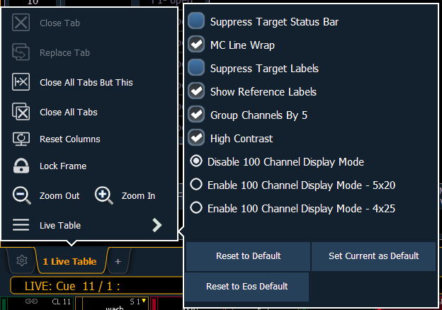
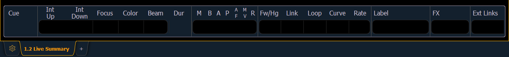
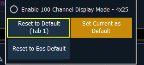

The Live/ Blind displays have a configuration menu. The configuration settings are available by selecting the display tab and then double clicking on the tab to open the menu. With the Live/ Blind display selected, you can also select the gear icon, which is located to the left of the tabs, to open the configuration menu.
Note: Each instance of Live/ Blind may be configured individually.

The following options are available:

Note: [About] & [Label] can be used to temporally toggle between views.
You can save your settings as a default state for Live/Blind. The default is identified with parentheses.
